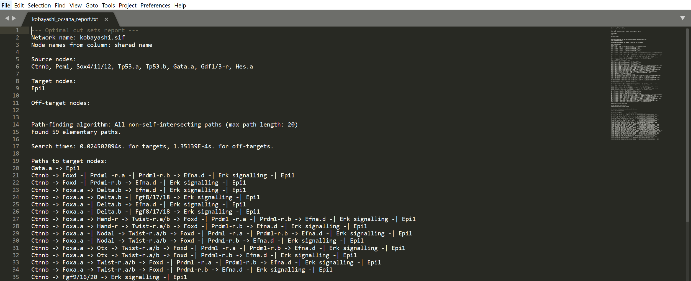

Computing Optimal Combinations of Intervention with OCSANA¶
OCSANA (Optimal Combinations of Interventions from Network Analysis), originally introduced in Vera-Licona et al., 2013, identifies and prioritizes optimal minimal combinations of interventions (CIs) that disrupt the elementary paths from selected source nodes to the specified target nodes. When indicated by the user, OCSANA seeks to additionally minimize the side-effects that CIs can cause on specified off-target nodes.
Running OCSANA in Cytoscape¶
After installation of OCSANA+ and loading of a network, the OCSANA configuration menu will appear as a tab in the Cytoscape Control Panel (left panel).

Configuring your OCSANA Run¶
Configure Network Processing (pink panel)¶
This subpanel allows users to select how OCSANA processes your network (which columns to read for node names) and which nodes to build paths from (source nodes to targets, source nodes to off-targets).
Node Selection Mode¶
Select whether you will enter a string of source, target, and off target nodes, or will click-to-select the nodes.
Select Node Name Column¶
This option allows users to select which column of the node attribute table will be used to identify network nodes.
Source Nodes¶
The Source nodes section allows the user to specify the source nodes (i.e. the nodes from which the signals’ cascades will start). The nodes can be selected manually from the list of nodes appearing in this section or by copying and pasting the list of desired nodes in the dialog window after clicking on the set source nodes button.
Target Nodes¶
The Target nodessection allows the user to select the target nodes (i.e. the nodes intended to be blocked). The nodes can be selected manually from the list of nodes appearing in this section or by copying and pasting a list of nodes in the dialog window after clicking on the set of target nodes button.
Off-target Nodes¶
The off-target nodes section is an optional column for the user that allows to select offtarget (side-effect) nodes, that is, nodes that are preferred to be avoided when constructing CIs. A CI that contains a node from such given list, will then receive a penalty. The nodes can be selected manually from the list of nodes appearing in this column or by copying and pasting the list of nodes in the dialog window after clicking on the set side-effects nodes button.
Configuring Edge Sign (purple panel)¶
To Configure edge signs, please include an “interaction” column that specifies positive edges as “activates” and negative edges as “inhibits.” Otherwise, all edges will be considered positive.
This panel allows users to select which algorithm should be used for finding paths between source nodes and target/off-target nodes.
Shortest Paths¶
searches for the paths with the shortest length among all the elementary paths connecting source nodes to target nodes and source nodes to side-effect nodes (via Dijkstra’s algorithm).
All Non-Self-intersecting paths¶
considers all the paths, between specified nodes, that do not contain loops (self-intersections).
Configure Combinations of Interventions (CIs) with Minimal Hitting Sets Discovery (green panel)¶
This panel allows you to choose which MHS solving algorithm you would like to use to discover CIs. A CI is as a set of nodes such that each elementary path (a path from user-selected source to target nodes) contains at least one node from this set. This CI set indicates the nodes to be intervened to disrupt all the identified elementary paths. Optimality of CIs is defined in terms of a heuristic scoring. The scoring of a node is based on (i) the lengths of the paths from the node of interest to the targets, (ii) the type of effect on target nodes (e.g. activation/inhibition effect), (iii) side effects with respect to off-target nodes, (iv) the number of elementary paths in which the node participates and (v) the number of targets that such node can reach simultaneously.
The algorithms included are:
- Minimal-to-Maximal Conversion Search (MMCS)
- Reverse Search (RS)
- Berge’s algorithm
- Greedy Heuristic Algorithm
If you are interested in descriptions of these algorithms, please see the OCSANA+ supplementary file or Gainer-Dewar and Vera-Licona, 2017.
Allow sources in CIs¶
Select this option if you would like source nodes to be considered in CIs
Bound thread count¶
Select this option if you would like to bind the number of threads used to CI Discovery if selected, enter the number of threads to be used in the below box (min:1,max:16)
Select this option if you would like to bind the number of nodes that can be in a CI if selected, enter the max CI size in the below box (min:1,max:20)
For the Greedy Heuristic Algorithm, you may also set a bound on the number of candidates (the number of potential CIs). If selected, enter the number below. Note this is converted to millions (if you input “1”, OCSANA will generate 1,000,000 candidates)
After configuring your OCSANA Run, click ‘Run OCSANA Calculations’
OCSANA Results¶
After the OCSANA run has completed, the results will be displayed in the OCSANA tabe of the Cytoscape Results Panel (right panel)
CIs¶

The CIs results tab displays the discovered CIs for your OCSANA run. The information produced includes:
- CI: an optimal Combination of Intervention
- Size: the number of nodes in the CI
- OCSANA Score: The calculated OCSANA score for the CI
- Target Score: The CI score for targets (component of OCSANA Score)
- Side Effect Score: The CI score for off-targets (component of OCSANA Score), if off-target nodes were included in the search parameters
Paths to Targets¶

This tab of the OCSANA output panel displays the paths from source nodes to each target node. The paths displayed will be in accordance with your run configuration and path algorithm selection.
Saving Results¶
By clicking ‘Save Report’, you can save a text file that contains both your OCSANA configuration settings and results from your OCSANA run.
